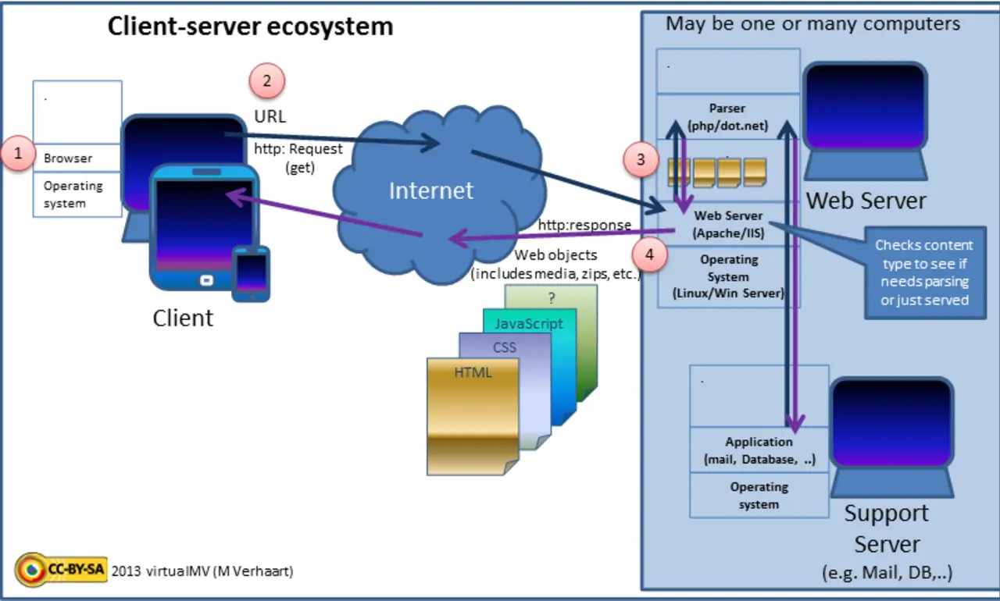

Short answer
A dynamic URL is indexable when that address keeps returning the same document a crawler can fetch.
The diagram shows a server building the response. That is ordinary and fine. It is not fine when the build depends on a session cookie, omits the product text, or changes the document’s identity on every hit. SEO Health looks at the fetched HTML, not at whether a database was involved.
Definition
Templates are the unit of repair. A defect in the product template appears on every product URL. Sampling one URL is enough to see it, and fixing the template fixes the class. Page-by-page copy edits do not. The audit should say “template” when that is what it found.
How the structure carries discovery
Fetch one URL from the template with a clean client and require a stable HTML document.
Parameters that select a real record can stay in the URL if they are the identity. Parameters that select a user must not. A response that varies on cookies without a Vary header, or that varies when it should not, will confuse caches and crawlers. Say what the URL is supposed to mean, then check that a second fetch agrees.

What to check
- A cookie-free fetch contains the primary text
- Session parameters absent from links and the sitemap
- Two fetches of the canonical URL agree
- The finding named as a template when it repeats
- One sample record URL
A practical example
/item?id=440 returns the valve data sheet when fetched without cookies, including the name and the PDF link. /item?id=440&sid= random returns a login wall. The health rule is that the id URL is the document and the sid URL is never linked or sitemapped. The template is dynamic and still a document.
What this does not claim
A dynamic template does not guarantee rankings or citations.
Where Mika Visibility files this
Mika Visibility reads architecture as SEO Health: whether important templates sit on a path from hubs the crawler can follow. Depth and orphans are structure. Uncovered buyer questions are SEO Growth. A tidy tree does not guarantee that a page is easy to quote, which is a GEO quality, not a promise of citation.
The diagram shows a server building one response so “dynamic” is not treated as the opposite of indexable.
FAQ
When is a dynamic URL a document?
A dynamic URL is indexable when that address keeps returning the same document a crawler can fetch.
What must a clean fetch contain?
Fetch one URL from the template with a clean client and require a stable HTML document.
Does a dynamic template guarantee rankings?
A dynamic template does not guarantee rankings or citations.
Next step
Run a structured SEO + GEO audit to see health findings, growth gaps, and a blueprint you can act on.
Clearer entities, answers, evidence, and context make pages easier to understand and reference. Results in any answer product are not guaranteed.